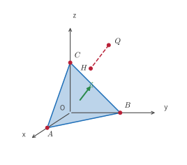
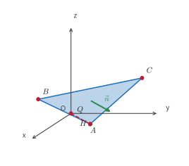
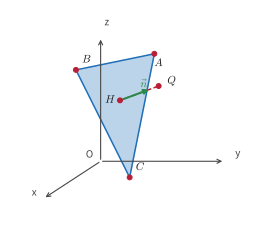

別冊練習問題 2 の解答 3点を通る平面の方程式と距離
(1) 3点 \(A\left(2,\ 0,\ 0\right),\ B\left(0,\ 2,\ 0\right),\ C\left(0,\ 0,\ 2\right)\) を通る平面の方程式と、点 \(Q\left(1,\ 2,\ 3\right)\) からこの平面までの距離を求めよ。
平面の法線ベクトル \(\vec n=(a,b,c)\)
\(\overrightarrow{AB}=\left(-2,\ 2,\ 0\right),\ \overrightarrow{AC}=\left(-2,\ 0,\ 2\right)\)。
\[\begin{cases}\vec n\cdot\overrightarrow{AB}=0\\ \vec n\cdot\overrightarrow{AC}=0\end{cases}\]\[\begin{cases}- 2 a + 2 b=0\\ - 2 a + 2 c=0\end{cases}\]\(\vec n\) を1つ求める
\(a\) を決めると \(b,\ c\) が決まる（\(a\) を文字のまま残して解く）。
\[b=a,\quad c=a\]分数が消えるように \(a\) を選ぶ。
\[a=1\ \text{のとき}\ b=1,\ c=1\]\[\vec n=\left(1,\ 1,\ 1\right)\]図：平面 \(ABC\) に垂直な \(\vec n\) と、点 \(Q\) から平面に下ろした垂線 \(QH\)（赤の破線）。

平面の方程式
点 \(A\left(2,\ 0,\ 0\right)\) を通るので
\[x + y + z - 2=0\]\[x + y + z=2\]点 \(Q\) との距離
\(\dfrac{|ax_0+by_0+cz_0-d|}{\sqrt{a^2+b^2+c^2}}\)。
\[\dfrac{|1\cdot1+1\cdot2+1\cdot3-2|}{\sqrt{1^2+1^2+1^2}}\]\[=\dfrac{|6-2|}{\sqrt{3}}=\dfrac{4}{\sqrt{3}}=\dfrac{4 \sqrt{3}}{3}\]【答案】
\[x + y + z=2,\ \ \text{距離 }\dfrac{4 \sqrt{3}}{3}\]答
(2) 3点 \(A\left(1,\ 1,\ 0\right),\ B\left(2,\ 0,\ 1\right),\ C\left(0,\ 2,\ 1\right)\) を通る平面の方程式と、点 \(Q\left(0,\ 0,\ 0\right)\) からこの平面までの距離を求めよ。
平面の法線ベクトル \(\vec n=(a,b,c)\)
\(\overrightarrow{AB}=\left(1,\ -1,\ 1\right),\ \overrightarrow{AC}=\left(-1,\ 1,\ 1\right)\)。
\[\begin{cases}\vec n\cdot\overrightarrow{AB}=0\\ \vec n\cdot\overrightarrow{AC}=0\end{cases}\]\[\begin{cases}a - b + c=0\\ - a + b + c=0\end{cases}\]\(\vec n\) を1つ求める
\(a\) を決めると \(b,\ c\) が決まる（\(a\) を文字のまま残して解く）。
\[b=a,\quad c=0\]分数が消えるように \(a\) を選ぶ。
\[a=1\ \text{のとき}\ b=1,\ c=0\]\[\vec n=\left(1,\ 1,\ 0\right)\]図：平面 \(ABC\) に垂直な \(\vec n\) と、点 \(Q\) から平面に下ろした垂線 \(QH\)（赤の破線）。

平面の方程式
点 \(A\left(1,\ 1,\ 0\right)\) を通るので
\[x + y - 2=0\]\[x + y=2\]点 \(Q\) との距離
\(\dfrac{|ax_0+by_0+cz_0-d|}{\sqrt{a^2+b^2+c^2}}\)。
\[\dfrac{|1\cdot0+1\cdot0+0\cdot0-2|}{\sqrt{1^2+1^2+0^2}}\]\[=\dfrac{|0-2|}{\sqrt{2}}=\dfrac{2}{\sqrt{2}}=\sqrt{2}\]【答案】
\[x + y=2,\ \ \text{距離 }\sqrt{2}\]答
(3) 3点 \(A\left(0,\ 1,\ 2\right),\ B\left(1,\ 0,\ 2\right),\ C\left(1,\ 1,\ 0\right)\) を通る平面の方程式と、点 \(Q\left(2,\ 2,\ 2\right)\) からこの平面までの距離を求めよ。
平面の法線ベクトル \(\vec n=(a,b,c)\)
\(\overrightarrow{AB}=\left(1,\ -1,\ 0\right),\ \overrightarrow{AC}=\left(1,\ 0,\ -2\right)\)。
\[\begin{cases}\vec n\cdot\overrightarrow{AB}=0\\ \vec n\cdot\overrightarrow{AC}=0\end{cases}\]\[\begin{cases}a - b=0\\ a - 2 c=0\end{cases}\]\(\vec n\) を1つ求める
\(a\) を決めると \(b,\ c\) が決まる（\(a\) を文字のまま残して解く）。
\[b=a,\quad c=\dfrac{a}{2}\]分数が消えるように \(a\) を選ぶ。
\[a=2\ \text{のとき}\ b=2,\ c=1\]\[\vec n=\left(2,\ 2,\ 1\right)\]図：平面 \(ABC\) に垂直な \(\vec n\) と、点 \(Q\) から平面に下ろした垂線 \(QH\)（赤の破線）。

平面の方程式
点 \(A\left(0,\ 1,\ 2\right)\) を通るので
\[2 x + 2 y + z - 4=0\]\[2 x + 2 y + z=4\]点 \(Q\) との距離
\(\dfrac{|ax_0+by_0+cz_0-d|}{\sqrt{a^2+b^2+c^2}}\)。
\[\dfrac{|2\cdot2+2\cdot2+1\cdot2-4|}{\sqrt{2^2+2^2+1^2}}\]\[=\dfrac{|10-4|}{\sqrt{9}}=\dfrac{6}{3}=2\]【答案】
\[2 x + 2 y + z=4,\ \ \text{距離 }2\]答